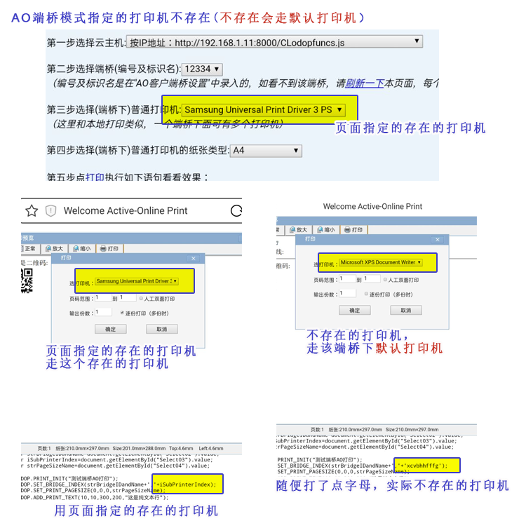
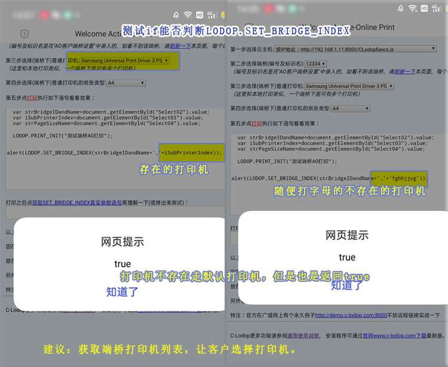

C-lodop的AO端桥模式指定的打印机不存在和判断测试
一般端桥模式是由客户在端桥打印机列表里选择打印机，获取端桥所在电脑的所有打印机，然后客户选择那个打印机打印。
如果想不让客户选打印机，不用获取的打印机列表，端桥是在线的，端桥模式指定的打印机名称不存在，结果会按照优先级走，会走该端桥的默认打印机。这次测试下这种情况，端桥模式，发送端，AO云主机服务器，端桥端，正常需要三个终端，之前用的本机当发送端，当云主机，当端桥测试的。本文打算用手机再测试下，一台windows电脑当云主机和端桥，手机作为发送端，在手机预览和查看效果。
本文两个测试结果：
（1）端桥指定的打印机不存在，会走默认打印机。
（2）if判断打印机，无论打印机名称正确错误，都会返回true。
建议:获取端桥打印机列表，让客户选择打印机。
实际用c-lodop本身的欢迎页面测试了一下，确实是这样，如图：
第一个直接用页面自带的选择的打印机，
第二个是随便写了点字母，该电脑没有这个名称的打印机，结果走的是端桥端的默认打印机。

官网样例7的代码里有判断本地打印机指定是否成功了，直接用if判断返回值，有客户想问LODOP.SET_BRIDGE_INDEX是否也能这样判断，不让客户从列表里选择打印机，判断打印机名称不存在，提示客户把操作系统的打印机名称改成代码里的名称，这样客户就不用选择了。
实际测试效果，端桥名无论指定正确还是错误，判断都会返回true，不能用这个判断，c-lodop技术手册里也没有这个函数的返回值介绍，可见不能用这种判断方法。
如果不想让客户选择打印机，只能确保指定的打印机名称客户操作系统存在。
例如，在欢迎页面，
var a=LODOP.SET_BRIDGE_INDEX(strBridgeIDandName+','+'sddda');alert(a);
或if(LODOP.SET_BRIDGE_INDEX(strBridgeIDandName+','+'sddda'))
无论第二个打印机参数指定是否正确，都会返回true。
